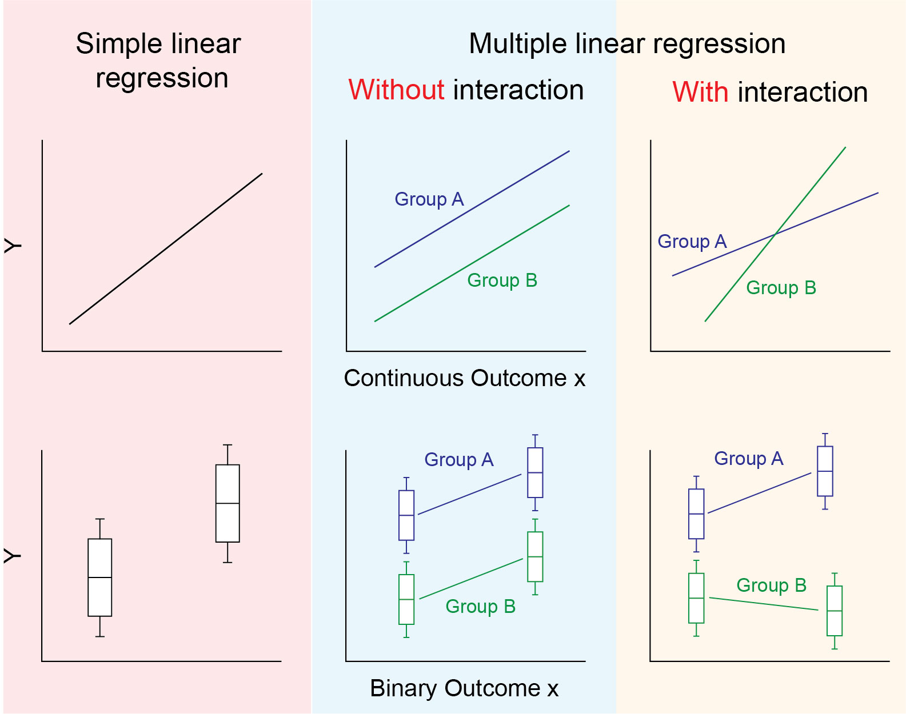

Understand and explain the concept of interaction (effect modification)
Carry out linear regression analysis that accounts for interaction and interpret the key findings
Understand the concept of collinearity and how it affects linear regression
Implement model building strategies for dealing with collinearity
Learning activities
This week’s learning activities include:
Learning Activity
Learning objectives
Reading
1, 2
Collaborative exercise
1, 2
Independent investigation
3, 4
Independent exercises
3, 4
Live tutorial/discussion
3, 4
Independent investigation - Collinearity
This week you will be practicing learning independently an unfamiliar biostatistics topic. This is aimed to provide to you the skills of independent learning a biostatistician needs to carry out an unfamiliar analysis that was not covered in the Master of Biostatistics. These are skills that will also be needed in your workplace placement project (Master students only).
The topic of this weeks independent learning exercise is collinearity. Collinearity is an issue that can be faced in any regression model with more than one covariate. This week you will independently investigating collinearity and methods to deal with this statistical phenomena. To do this perform the steps below:
Use appropriate resources to learn about collinearity in linear regression. Specifically, by the end of this investigation you should be able to:
Describe what collinearity is in linear regression
Carry out an investigation to detect collinearity
Be familiar with methods of dealing with collinarity
Investigate the reliability of your source. Some helpful questions to ask yourself are:
How does this information compare to other sources?
What authority does the author have to provide this information?
When was this resource developed and is the information likely to have changed?
What is the purpose of this resource?
Create a resource that describes to your peers your findings. This resource could be a short video, or just a discussion board post. The resource should include the following
A description of what is collinearity
Instructions on how to detect collinearity in linear regression analysis
A description of at least one technique of dealing with collinearity
Your proposed solution to the exercise below (optional)
For the third task, each learning resource should be relatively short (taking 2-4 minutes to watch or read) and be posted in the week 5 independent task assignment (even though it is not an assignment). All learning resources that are posted will receive feedback from the unit coordinator. Your resource will also be available to other students who may also wish to provide some peer feedback and or encouragement.
Independent Exercise
In managing children with asthmas and other respiratory diseases, it is important to monitor various measures of lung function, one of the most import of which is the volume of air that can be forced out fot he lungs in one second, known as the Forced Expiratory Volume (1 second) or FEV1 for short (measured in litres). The “lungfun.csv” dataset contains the following variables:
idnum: patient identification number
age: age in years
wt: weight in kg
height: in cm
armsp: arm span in cm (the distance between the fingertips of left and right hands when hands outstretched)
ulna: ulna length in cm (the ulna is the main bone of the arm below the elbow)
farm: forearm length in cm (distance from elbow to the fingertip)
fev1: Forced Expiratory Volume in 1 second (L)
Carry out a regression with fev1 as the outcome, and all covariates included (excluding idnum). Describe any collinearity you observe. How would you recommend dealing with this collinearity?
Interaction (effect modification)
In previous weeks we assumed that the true underlying effect of an exposure on an outcome was constant over all individuals. This is not always the case and when the effect of the exposure is different for different groups this is called “interaction”. Another term frequently used instead of interaction is “effect modification”. You may wish to review your epidemiology notes for more information and examples of interaction.
The panel of images below is a helpful visual representation of the differences in regression models with and without interaction. The first column shows simple linear regression with a single relationship between \(x\) and \(Y\) (a continuous \(x\) is shown in the top 3 panels, and a binary \(x\) is shown in the bottom three. The second column shows multiple linear regression as we have used it so far. Here a binary “group” variable is included to adjust for the mean difference in \(Y\) across groups A and B. As the two lines are parallel along \(x\) the mean difference between groups is constant for all values of \(x\). In the third panel, we see that the relationship between \(x\) and \(Y\) is different for group A and group B. That is, there is interaction between \(x\) and the group variable. The lines are not parallel so the mean difference between group A and B depends on the value of x.

A regression model for interaction
We introduce the mathematical form of the regression model for interaction by considering a regression model with two covariates \(x_1\) and \(x_2\) which are regressed on our outcome variable \(Y\). The equation for this model without interaction is shown below:
The term we add to this model to account for, and test for interaction is the product of \(x_1\) and \(x_2\) as follows:
\[\text{E}(Y) = \beta_0 +\beta_1 x_1 + \beta_2 x_2 + \beta_3 x_1 x_2\] To see why this works, consider the following factorisations of this regression equation
\[\text{E}(Y) = \beta_0 +\beta_1 x_1 + (\beta_2 + \beta_3 x_1) x_2\] Here, that the effect of \(x_2\) on \(Y\) equals \(\beta_2 + \beta_3 x_1\). That is the effect of \(x_2\) is dependent on the value of \(x_1\) - the definition of interaction. Also, you could instead factor out \(x_1\) instead of \(x_2\) to obtain the following
\[\text{E}(Y) = \beta_0 + (\beta_1 + \beta_3 x_2) x_1 + \beta_2 x_2\] where we see that the effect of \(x_1\) equals \(\beta_1 + \beta_3 x_2\). That is, the effect of \(x_1\) is dependent on the value of \(x_2\).
This factorisation is also useful when considering the interpretation of each of the regression coefficients \(\beta_0\), \(\beta_1\), \(\beta_2\) and \(\beta_3\). These are:
\(\beta_0\): the mean of \(Y\) when \(x_1 = x_2 = 0\)
\(\beta_1\): the effect of \(x_1\) when \(x_2 = 0\). i.e. The mean of \(Y\) will increase by \(\beta_1\) for every one unit increase in \(x_1\) when \(x_2 = 0\).
\(\beta_2\): the effect of \(x_2\) when \(x_1 = 0\). i.e. The mean of \(Y\) will increase by \(\beta_2\) for every one unit increase in \(x_2\) when \(x_1 = 0\).
\(\beta_3\): How the effect of \(x_1\) changes for every one unit increase in \(x_2\). Or alternatively, how the effect of \(x_2\) changes for every one unit increase in \(x_1\).
Importantly, the statistical test for trend here is the test with the null hypothesis \(\beta_3 = 0\). Therefore the P-value for \(\beta_3\) should be interpreted as the evidence for interaction between \(x_1\) and \(x_2\).
Interaction in statistical software
There are two approaches for implementing an interaction regression model in statistical software. The first is to manually create a new column of data which is the product of the two columns you wish to test for interaction for. You can then include this new variable as a covariate in the regression. The second method is to allow Stata or R to do this automatically, by specifying the interaction in the regression formula. The second method is always recommended as interaction involving categorical variables of more than two categories requires more than just creating a product of two covariates, but instead creating a product of all dummy variables involved in the categorical variable.
Stata
In Stata the hash symbol # is used to specify interaction. E.g. reg Y x1 x2 x1#x2 would be a regression model with outcome \(Y\), covariates \(x_1\) and \(x_2\) and interaction between \(x_1\) and \(x_2\). Alternatively you can use the double hash ## as a shorthand to specify the inclusion of both covariates and interaction between them. i.e. reg Y x1 x2 x1#x2 is equivalent to reg Y x1##x2
R
In R the colon symbol : is used to specify interaction. E.g. lm(Y ~ x1 + x2 + x1:x2, data=...) would be a regression model with outcome \(Y\), covariates \(x_1\) and \(x_2\) and interaction between \(x_1\) and \(x_2\). Alternatively you can use the star * as a shorthand to specify the inclusion of both covariates and interaction between them. i.e. lm(Y ~ x1 + x2 + x1*x2, data=...) is equivalent to lm(Y ~ x1:x2, data=...).
Book Chapter 4. Section 4.6.5 (pages 107-108).
This small reading provides brief descriptions of several important factors to consider when using a regression model with interaction.
Example
We will show two examples from the textbook that demonstrate interaction. These are examples 4.6.1 (interaction between two binary variables) and 4.6.2 (interaction between a binary variable and a continuous variable). You can also of course have interaction between two continuous variables.
Example 4.6.1
We return to the HERS dataset with low-density lioprotein (LDL) as the outcome and statin use (statin) and hormone therapy (HT) as the two binary covariates. Note that the results below will differ to those in the text book as the textbook uses LDL1 as the outcome instead of LDL. The regression model with interaction is:
hers <-read.csv("https://www.dropbox.com/s/7f5lnv19drg6655/hersdata.csv?dl=1")## Warning in file(file, "rt"): cannot open URL## 'https://www.dropbox.com/s/dl/7f5lnv19drg6655/hersdata.csv': HTTP status was## '400 Bad Request'## Error in file(file, "rt"): cannot open the connection to 'https://www.dropbox.com/s/7f5lnv19drg6655/hersdata.csv?dl=1'lm.hers <-lm(LDL ~ HT + statins + HT:statins, data = hers)## Error in eval(mf, parent.frame()): object 'hers' not foundsummary(lm.hers)## Error in eval(expr, envir, enclos): object 'lm.hers' not foundconfint(lm.hers)## Error in eval(expr, envir, enclos): object 'lm.hers' not found
You may notice here that the R and Stata output have some differences as they choose different reference categories for the HT variable (Stata chose the placebo group as the first observation in the dataset is from the placebo group, and R chose the hormone therapy group as “hormone therapy” is before “placebo” when arranging in alphabetical order). In both instances here however the primary result is the same: “There is no evidence of interacation between HT and statin use (P = 0.513)”. As there is no evidence for interaction, you would then proceed with a non-interaction regression model.
Example 4.6.2
Using the same HERS data as example 4.6.1 we now investigate possible interaction between statin use (binary variable) and body mass index (BMI - a continuous variable). In this example, we also adjust for several other covariates including age, nonwhite, smoking and drinkany. We also use a centered version of the BMI variable. Unlike in example 4.6.1 our results should match the textbook as we both use the LDL variable.
hers <-read.csv("https://www.dropbox.com/s/7f5lnv19drg6655/hersdata.csv?dl=1")## Warning in file(file, "rt"): cannot open URL## 'https://www.dropbox.com/s/dl/7f5lnv19drg6655/hersdata.csv': HTTP status was## '400 Bad Request'## Error in file(file, "rt"): cannot open the connection to 'https://www.dropbox.com/s/7f5lnv19drg6655/hersdata.csv?dl=1'hers$BMIc <- hers$BMI -28.57925## Error in eval(expr, envir, enclos): object 'hers' not foundlm.hers <-lm(LDL ~ statins*BMIc + age + nonwhite + smoking + drinkany, data = hers)## Error in eval(mf, parent.frame()): object 'hers' not foundsummary(lm.hers)## Error in eval(expr, envir, enclos): object 'lm.hers' not foundconfint(lm.hers)## Error in eval(expr, envir, enclos): object 'lm.hers' not found
We can see from the output above that there is strong evidence for interaction between body mass index and statin use, after adjusting for age, nonwhite, smoking, and drinkany covariates (P = 0.009). Given the strong evidence for interaction, we would decide to keep interaction in this model. This makes the interpretation of the base statins and BMIc variables different as follows:
statins. When BMIc = 0, the those taking statins have a LDL on average 16.25mg/dL lower than those not taking statins. Here we can see the value of centering BMI, as BMIc = 0 corresponds to the effect of statin use for the mean BMI of this sample. Otherwise it would correspond to the effect of statins for a BMI of 0 (which is not appropriate to calculate)
BMIc. For those not taking statins (i.e. statins = 0), for every 1kg/m2 increase in BMI, the mean LDL increases by 0.58mg/dL.
To calculate the mean effect of BMI on those taking statins, we would need to take linear combinations of the above regression coefficients. In this case the mean effect would be 0.58 - 0.70 = -0.12. To get a more accurate calculation of this, along with the corresponding confidence interval use the lincom BMIc + 1.statins#c.BMIc statement in stata and the summary(glht(lm.hers, "BMIc + statinsyes:BMIc = 0")) command in R (you can swap “summary” with “confint” in this statement to obtain the confidence intervals).
Summary
This weeks key concepts are:
Collinearity occurs when two or more covariates in a regression model are associated with each other, and do not have sufficient independent associations with the outcome
Collinearity increases standard errors of regression coefficients
You should check for collinearity when carrying out linear regression. If detected, the effects of collinearity can be determined by removing some of the collinear covariates.
Interaction between two covariates occurs when the effect size for variable 1, depends on the level of covariate 2. This is also called effect modification.
Interaction between two variables in regression can be tested by including an additional covariate in your regression model that is the multiplication of your two covariates. If one or more of these covariates is categorical (with more than 2 categories), this will be the addition of several interaction terms between all dummy variables.
The interpretation of regression models with interaction terms is more complex as effect sizes are not constant for interacting covariates.